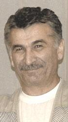

ХОЛУЙ С БОЛЬШОЙ БУКВЫ

В республиканской газете и электронных СМИ России появились
статьи некого битарова (писать с маленькой буквы). Писалось и о Гражданском Форуме учрежденном в декабре 2007 года в Ереване и проведшем первую рабочую встречу в Анкаре в марте года сего. Форум известен узкому кругу его учредителей и организаторов, ибо ещё ни чем не успел проявить себя. Встреча в Анкаре громко именуемая рабочей, была первой, и де-факто познакомила участников Форума друг с другом. Ничего, кроме принятия невинной декларации за этим пока не последовало. Чем же вызвало внимание к политическим трупам, горе бизнесменам и неудачливым семьянинам названными так битаровым. Копошились бы себе, где то, и не мешали, «государевым мужам» рулить Южной Осетией.
Ответ прост и ясен. В Южной Осетии действует группочка, метко названная бывшим министром инстранных дел Урузмагом Джиоевым «людьми корыта». Они жируют на Российской помощи. Бульдожьей хваткой «приватизировали» умы обывателей, и ради сохранения статуса кво, не скупятся на траты. Нанятый ими высоколобый холуй, обязан отслеживать любую опасность, грозящую благополучию «людей корыта». В чем же опасность ? Что за Форум?
Опасность, в личностях участников, в их безупречном недавнем огненном прошлом. Они были защитниками Отечества в минуту опасности, были депутатами, когда в парламенте освобождались места убегающих в безопасные края «патриотов». Единственная неправительственная организация, которую мы действительно организовали, незывалась тогда незаконным вооруженным формированием. Создание её требовало самостоятельного решения, немалого мужества и средств. Большинству участников форума этих качеств не занимать, за нами шла молодежь и гибла. Да за правое дело, за своих родных и близких - за свободу, но уходили молодые жизни, в конце века ХХ-ого, из-за средневековых понятий нациста Гамсахурдия. Мы хотели внести свою скромную лепту в миротворческий процесс, найдя партнеров на грузинской стороне.
Холуй почуял опасность и сигналит хозяевам – «Фас!!!». Форум может окрепнуть. Холуй знает: люди в нем не воры и трусы, они могут деньги Запада не украсть, а сделать на них что-то полезное, их авторитет подкрепится материальной составляющей. Надо душить их на корню. Холую и его хозяевам нужны выстрелы и взрывы. Им не нужна честная критика. Битаров умалчивает, что перебежавшие на сторону врага были членами правительства и парламента и в свое время открыто нами критиковались. За них горой стояли лизоблюды, умело оставшиеся в тех же коридорах.
Мнящий себя высоколобым холуй цитирует Фукуяму (которого я не читал) и Руслана Бзарова – которого читал очень внимательно. Наши предки передали предкам Фукуямы кодекс чести самурая, их потомки хранят его до наших дней и процветают. Наш холуй хочет видеть народ Южной Осетии в яме, в нищете и невежестве, хочет вытравить дух свободы и предприимчивости, тогда он и ему подобные будут востребованы. В корыте будет похлебка.
Выход очень прост, придуман нашими предками задолго до Христовой эры. Открытое слово, «ныхас» - диалог за круглым столом. В судьи позовем Бзарова и Российких экспертов, и нашу молодежь, в лизоблюдстве не замеченную, - пусть внимает и учится. Россию битаров тоже подставляет. Западу дается шанс упрекать Южную Осетию в недостаточной демократичности. При финансовой помощи России, - прямой упрек в её адрес.
Личная просьба - битаров на диалог у тебя духу не хватит - Битаровы достойная фамилия ничем себя не запятнавшая, возьми хоть фамилию Хугасов (Свинопасов) с большой буквы и помни свиней перед убоем откармливают.
Слава богу, не все так плохо. Члены правительства Константин Дзугаев и Лолита Бедоева, советники президента, лиц не прятали, выслушали неприятные слова и прямо заявили нам об открытости власти и готовности к конструктивному диалогу. Нет сомнения, что у них хватает союзников в коридорах власти. Мы призываем всех не быть равнодушными, истина рождается в споре.
Тимур Цховребов
28-06-08
Ответ прост и ясен. В Южной Осетии действует группочка, метко названная бывшим министром инстранных дел Урузмагом Джиоевым «людьми корыта». Они жируют на Российской помощи. Бульдожьей хваткой «приватизировали» умы обывателей, и ради сохранения статуса кво, не скупятся на траты. Нанятый ими высоколобый холуй, обязан отслеживать любую опасность, грозящую благополучию «людей корыта». В чем же опасность ? Что за Форум?
Опасность, в личностях участников, в их безупречном недавнем огненном прошлом. Они были защитниками Отечества в минуту опасности, были депутатами, когда в парламенте освобождались места убегающих в безопасные края «патриотов». Единственная неправительственная организация, которую мы действительно организовали, незывалась тогда незаконным вооруженным формированием. Создание её требовало самостоятельного решения, немалого мужества и средств. Большинству участников форума этих качеств не занимать, за нами шла молодежь и гибла. Да за правое дело, за своих родных и близких - за свободу, но уходили молодые жизни, в конце века ХХ-ого, из-за средневековых понятий нациста Гамсахурдия. Мы хотели внести свою скромную лепту в миротворческий процесс, найдя партнеров на грузинской стороне.
Холуй почуял опасность и сигналит хозяевам – «Фас!!!». Форум может окрепнуть. Холуй знает: люди в нем не воры и трусы, они могут деньги Запада не украсть, а сделать на них что-то полезное, их авторитет подкрепится материальной составляющей. Надо душить их на корню. Холую и его хозяевам нужны выстрелы и взрывы. Им не нужна честная критика. Битаров умалчивает, что перебежавшие на сторону врага были членами правительства и парламента и в свое время открыто нами критиковались. За них горой стояли лизоблюды, умело оставшиеся в тех же коридорах.
Мнящий себя высоколобым холуй цитирует Фукуяму (которого я не читал) и Руслана Бзарова – которого читал очень внимательно. Наши предки передали предкам Фукуямы кодекс чести самурая, их потомки хранят его до наших дней и процветают. Наш холуй хочет видеть народ Южной Осетии в яме, в нищете и невежестве, хочет вытравить дух свободы и предприимчивости, тогда он и ему подобные будут востребованы. В корыте будет похлебка.
Выход очень прост, придуман нашими предками задолго до Христовой эры. Открытое слово, «ныхас» - диалог за круглым столом. В судьи позовем Бзарова и Российких экспертов, и нашу молодежь, в лизоблюдстве не замеченную, - пусть внимает и учится. Россию битаров тоже подставляет. Западу дается шанс упрекать Южную Осетию в недостаточной демократичности. При финансовой помощи России, - прямой упрек в её адрес.
Личная просьба - битаров на диалог у тебя духу не хватит - Битаровы достойная фамилия ничем себя не запятнавшая, возьми хоть фамилию Хугасов (Свинопасов) с большой буквы и помни свиней перед убоем откармливают.
Слава богу, не все так плохо. Члены правительства Константин Дзугаев и Лолита Бедоева, советники президента, лиц не прятали, выслушали неприятные слова и прямо заявили нам об открытости власти и готовности к конструктивному диалогу. Нет сомнения, что у них хватает союзников в коридорах власти. Мы призываем всех не быть равнодушными, истина рождается в споре.
Тимур Цховребов
28-06-08